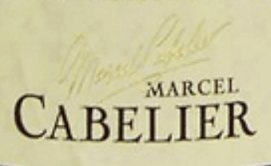
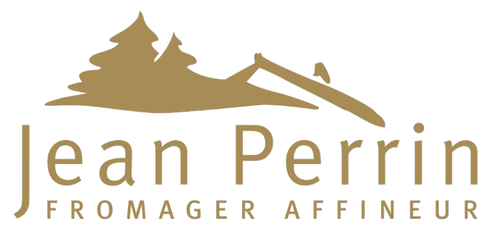
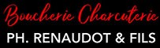

Le Terroir Comtois
Nos vins
-

Domaine
ANDRE & MIREILLE TISSOT
Situé à
ARBOIS (39)
-
Domaine
HENRI MAIRE
Situé à
ARBOIS (39)
-

Domaine
BENOIT BADOZ
Situé à
POLIGNY (39)
-

Domaine
CHANTAL & JEAN BERTHET-BONDET
Situé à
CHATEAU CHALON (39)
-

Domaine
MARCEL CABELIER
Situé à
HAUTEROCHE (39)
Nos fromages
-

Fruitière du
PLATEAU ARBOISIEN
Situé à
ARBOIS (39)
-

Fromagerie
PERRIN
Situé à
CLERON (25)
-

Fromagerie
SANCEY-RICHARD
Situé à
METABIEF (25)
-

Crémerie
Juraflore
Situé à
POLIGNY (39)
Notre charcuterie
-

MORTEAU SAUCISSE
Situé à
MORTEAU (25)
-

SALAISONS RENAUDOT
Situé à
PONTARLIER (25)
-

LES SALAISONS COMTOISES
Situé à
BELLEHERDE (25)
À la découverte du Domaine Tissot
Niché au cœur des paysages vallonnés du Jura, le Domaine Tissot incarne l’excellence et le respect du terroir. Fondé il y a plusieurs générations, ce domaine familial est aujourd’hui une référence incontournable pour les amateurs de vins jurassiens. À travers une approche mêlant tradition et innovation, le Domaine Tissot produit des vins authentiques, qui reflètent la richesse et la diversité des sols de cette région unique.
Situé à Montigny-les-Arsures, berceau du Savagnin, le domaine est dirigé par des vignerons passionnés et visionnaires, qui ont fait le choix de l’agriculture biologique et biodynamique. Ce respect de la nature et du cycle des saisons garantit des crus de grande qualité, tout en préservant l’équilibre des écosystèmes locaux.
Une expertise reconnue et récompensée
Le Domaine Tissot est mondialement connu pour son engagement envers l’excellence et sa capacité à sublimer les cépages emblématiques du Jura. Ses vins, régulièrement primés dans les concours nationaux et internationaux, témoignent d’un savoir-faire exceptionnel. Que vous soyez amateur de vins blancs, rouges, pétillants ou doux, le domaine propose une large gamme capable de satisfaire toutes les attentes.
Les trésors du Domaine Tissot
Découvrez la palette unique de vins proposée par le Domaine Tissot :
- Vin Jaune – Véritable emblème du Jura, ce vin d’exception, élevé sous voile pendant six ans et trois mois, dévoile des arômes complexes de noix, d’épices et une longueur en bouche remarquable.
- Vin de Paille – Élaboré à partir de raisins séchés, ce vin doux naturel est idéal pour accompagner un dessert raffiné ou un plateau de fromages comtois.
- Crémants du Jura – Des vins effervescents élégants, parfaits pour les célébrations ou pour accompagner des repas festifs.
- Vins blancs – Des cépages tels que le Chardonnay et le Savagnin, vinifiés avec soin pour révéler toute leur complexité et leur finesse.
- Vins rouges – Des rouges issus de cépages comme le Trousseau et le Poulsard, offrant des vins légers, fruités et parfaitement adaptés à la gastronomie régionale.
- Macvin du Jura – Cet apéritif typiquement jurassien, élaboré à partir de moût de raisin et d’eau-de-vie, est un véritable trésor à savourer.
Une expérience unique au cœur du Jura
En visitant le Domaine Tissot, vous plongerez dans un univers de passion et de tradition. Le domaine propose des visites guidées, où vous pourrez découvrir les secrets de l’élaboration des vins jurassiens, de la vigne à la bouteille. Les caves du domaine, véritables écrins pour leurs précieux nectars, vous offriront une expérience sensorielle inoubliable. Chaque dégustation est une invitation à explorer la richesse du Jura et à mieux comprendre le travail minutieux des vignerons.
Pourquoi choisir le Domaine Tissot ?
En choisissant les vins du Domaine Tissot, vous soutenez une démarche respectueuse de l’environnement et un patrimoine unique. Vous faites également le choix de l’excellence, avec des vins qui incarnent le caractère, la générosité et la singularité du terroir jurassien.
Pour en savoir plus sur le domaine, découvrir leurs produits ou planifier votre visite, rendez-vous sur leur site officiel : http://www.stephane-tissot.com/.
À la découverte du Domaine Henri Maire
Le Domaine Henri Maire est une véritable institution dans le Jura, reconnu comme l’un des pionniers ayant contribué à la renommée mondiale des vins jurassiens. Fondé en 1632, ce domaine incarne près de quatre siècles d’histoire, de passion et de savoir-faire transmis de génération en génération.
Situé à Arbois, capitale historique des vins du Jura, le Domaine Henri Maire est un acteur emblématique de la région, produisant une large gamme de vins qui reflètent l’excellence et la diversité du terroir jurassien.
Un engagement envers le terroir
Le Domaine Henri Maire possède l’un des plus vastes vignobles du Jura, réparti sur plus de 200 hectares de vignes. Grâce à une attention minutieuse portée à chaque étape de la production, des vendanges manuelles à la vinification, le domaine propose des vins qui capturent l’essence même des sols riches et variés de la région.
Fervent défenseur des cépages typiques du Jura, tels que le Savagnin, le Chardonnay, le Trousseau et le Poulsard, le domaine s’efforce de préserver l’authenticité tout en innovant pour répondre aux attentes des amateurs de vins du monde entier.
Les spécialités du Domaine Henri Maire
La gamme du Domaine Henri Maire comprend des crus incontournables qui séduiront aussi bien les amateurs que les connaisseurs :
- Vin Jaune – Symbole du Jura, ce vin unique est élevé sous voile pendant plus de six ans et se distingue par ses arômes de noix, de curry et d’épices.
- Vin de Paille – Ce vin doux et délicat est issu de raisins passerillés, offrant des notes de fruits confits et de miel.
- Macvin du Jura – Un apéritif emblématique, élaboré en mélangeant moût de raisin et eau-de-vie, idéal pour accompagner desserts ou fromages.
- Crémants du Jura – Des bulles élégantes et festives, parfaites pour toutes les occasions.
- Vins rouges – Des rouges légers et fruités, issus des cépages Poulsard et Trousseau, parfaits avec les plats de la gastronomie régionale.
- Vins blancs – Des Chardonnay et Savagnin riches en arômes, adaptés aux poissons, volailles et fromages.
Une visite incontournable
Le Domaine Henri Maire propose des visites captivantes pour les amateurs de vin. Plongez au cœur de l’histoire viticole jurassienne à travers un parcours guidé des caves historiques, où des fûts de chêne abritent des vins d’exception. Vous aurez également l’opportunité de déguster une sélection de crus et d’échanger avec des experts passionnés qui partagent leur amour pour le vin et le terroir.
Pourquoi choisir les vins du Domaine Henri Maire ?
Choisir le Domaine Henri Maire, c’est opter pour l’héritage, la qualité et l’innovation. Avec des méthodes de production respectueuses de l’environnement et un profond respect pour les traditions viticoles, le domaine offre des vins qui marient modernité et authenticité. Que ce soit pour un repas entre amis, une grande occasion ou un cadeau, les vins Henri Maire sont une valeur sûre.
Pour découvrir davantage sur le domaine, consulter leurs produits ou organiser une visite, rendez-vous sur leur site officiel : www.henri-maire.fr.
À la découverte du Domaine Badoz
Le Domaine Badoz, situé au cœur du Jura à Poligny, est une véritable institution familiale. Depuis 1659, dix générations de vignerons se sont succédé pour transmettre leur passion et leur savoir-faire dans l’élaboration de vins d’exception. Alliant tradition et innovation, le Domaine Badoz s’est imposé comme l’un des acteurs les plus respectés du vignoble jurassien.
Un domaine enraciné dans la tradition
Fort de plus de trois siècles d’histoire, le Domaine Badoz cultive avec soin une trentaine d’hectares de vignes répartis sur des terroirs variés. Chaque parcelle est travaillée avec précision pour exprimer au mieux les caractéristiques uniques des sols et des cépages jurassiens. La famille Badoz s’engage dans une viticulture durable, privilégiant des pratiques respectueuses de l’environnement afin de préserver le terroir pour les générations futures.
Une gamme de vins d'exception
Le Domaine Badoz propose une large sélection de vins qui reflètent la richesse et la diversité du Jura. Voici quelques-unes de leurs spécialités :
- Vin Jaune – Ce vin emblématique, élevé sous voile, offre des arômes puissants de noix, de noisette et d’épices, parfait pour accompagner un Comté affiné ou une volaille à la crème.
- Vin de Paille – Élaboré à partir de raisins séchés, ce vin doux révèle des notes de fruits confits et de miel, idéal pour sublimer un dessert ou un foie gras.
- Macvin du Jura – Ce mariage subtil entre moût de raisin et eau-de-vie locale en fait un apéritif unique et raffiné.
- Crémants du Jura – Des vins effervescents élégants, issus des cépages Chardonnay et Pinot Noir, parfaits pour les grandes occasions.
- Vins blancs – Des Savagnin et Chardonnay qui expriment toute la minéralité et la complexité du terroir jurassien.
- Vins rouges – Des rouges gourmands et fruités, élaborés à partir de cépages Poulsard et Trousseau, parfaits avec une cuisine locale.
- Rosés – Des vins frais et légers, idéaux pour accompagner les repas d’été.
Une expérience à vivre
Le Domaine Badoz ouvre ses portes aux visiteurs pour une immersion au cœur de son savoir-faire. Vous pourrez découvrir les vignes, visiter les caves et comprendre le processus minutieux de vinification. Chaque visite se termine par une dégustation, où vous pourrez savourer les vins du domaine et échanger avec des experts passionnés.
Un engagement durable
Le Domaine Badoz met un point d’honneur à pratiquer une viticulture durable, en utilisant des techniques respectueuses de l’environnement et en minimisant l’utilisation de produits chimiques. Cette démarche garantit des vins authentiques tout en préservant la biodiversité locale et les sols jurassiens.
Pourquoi choisir le Domaine Badoz ?
Choisir un vin du Domaine Badoz, c’est choisir l’excellence d’un savoir-faire transmis depuis plus de 360 ans. Chaque bouteille raconte une histoire, celle d’un amour profond pour la vigne et pour la région du Jura. Avec une gamme variée et des produits reconnus pour leur qualité, le domaine s’adresse autant aux amateurs qu’aux passionnés.
Pour en savoir plus, explorer leurs produits ou organiser une visite, rendez-vous sur leur site officiel : www.domaine-badoz.fr.
À la découverte du Domaine Berthet-Bondet
Le Domaine Berthet-Bondet, situé dans le village pittoresque de Château-Chalon, est l’un des joyaux du vignoble jurassien. Fondé en 1985 par Chantal et Jean Berthet-Bondet, ce domaine familial incarne la passion, l’excellence et le respect des traditions viticoles locales. Aujourd’hui, le domaine est réputé pour son engagement dans la production de vins bio et sa spécialisation dans le célèbre Vin Jaune.
Un terroir d'exception
Le Domaine Berthet-Bondet bénéficie d’un terroir unique, situé sur les coteaux escarpés de Château-Chalon, berceau du Vin Jaune. Les sols argilo-calcaires et l’exposition idéale des vignes permettent de produire des crus d’une grande finesse. Les 15 hectares de vignes sont entièrement conduits en agriculture biologique, garantissant des vins authentiques et respectueux de l’environnement.
Les vins du Domaine Berthet-Bondet
Le domaine propose une gamme de vins qui reflètent toute la richesse et la diversité du Jura. Parmi leurs spécialités :
- Vin Jaune – Élevé sous voile pendant plus de six ans, ce vin emblématique de Château-Chalon offre des arômes complexes de noix, d’épices et de curry.
- Vin de Paille – Un vin liquoreux élaboré à partir de raisins passerillés, aux saveurs intenses de fruits confits et de miel.
- Macvin du Jura – Un apéritif typique, élaboré en mélangeant moût de raisin et eau-de-vie, idéal pour accompagner desserts ou fromages.
- Crémants du Jura – Des vins effervescents frais et élégants, parfaits pour les célébrations.
- Vins blancs – Des Chardonnay et Savagnin expressifs, idéaux pour accompagner les poissons, volailles et fromages.
- Vins rouges – Élaborés à partir des cépages Trousseau et Poulsard, ces vins rouges sont légers et fruités, parfaits pour la gastronomie locale.
Une viticulture biologique
Depuis 2010, le Domaine Berthet-Bondet est certifié en agriculture biologique. Cette démarche témoigne de leur engagement pour une viticulture durable, respectueuse de l’environnement et du consommateur. Les pratiques culturales favorisent la biodiversité, tandis que la vinification met en avant la pureté et l’expression du terroir.
Une expérience immersive
Le Domaine Berthet-Bondet accueille les visiteurs dans un cadre chaleureux et authentique. Lors des visites guidées, vous découvrirez les secrets de la production du Vin Jaune, des caves ancestrales aux techniques d’élevage sous voile. La dégustation, point culminant de la visite, vous permettra de savourer une sélection des meilleurs crus du domaine.
Pourquoi choisir le Domaine Berthet-Bondet ?
En choisissant un vin du Domaine Berthet-Bondet, vous faites le choix de l’excellence, de l’authenticité et du respect des traditions. Les vins de ce domaine sont le fruit d’un travail minutieux et d’une profonde connexion au terroir jurassien. Ils sauront sublimer vos repas et ravir les amateurs de vins de caractère.
Pour en savoir plus sur le domaine, découvrir leurs produits ou organiser une visite, rendez-vous sur leur site officiel : https://berthet-bondet.com/.
À la découverte du Domaine Cabelier
Le Domaine Cabelier, situé à Arbois, au cœur du vignoble jurassien, est une maison incontournable pour les amateurs de vins du Jura. Reconnu pour la qualité et l’authenticité de ses crus, le domaine combine respect des traditions viticoles et modernité dans ses techniques de production. Le Domaine Cabelier est un véritable ambassadeur des vins d’Arbois, réputés pour leur finesse et leur caractère unique.
Un domaine riche en histoire
Fondé dans une région viticole d’exception, le Domaine Cabelier cultive des vignes dans un environnement privilégié, avec des sols calcaires et un climat idéal. Ces caractéristiques permettent de produire des vins qui expriment pleinement la richesse et la diversité des cépages jurassiens. Fort d’un savoir-faire transmis de génération en génération, le domaine est aujourd’hui une référence dans la région.
Une gamme variée et authentique
Le Domaine Cabelier propose une sélection de vins qui ravissent tous les palais. Voici quelques-unes de leurs spécialités :
- Vin Jaune – Ce vin emblématique du Jura, élevé sous voile pendant 6 ans et 3 mois, est un véritable trésor aux arômes de noix, de curry et d’épices.
- Vin de Paille – Un vin liquoreux rare et précieux, aux saveurs intenses de fruits confits et de miel, parfait pour accompagner desserts et foie gras.
- Macvin du Jura – Ce vin doux, issu du mariage du moût de raisin et d’eau-de-vie, est un incontournable pour les apéritifs et les desserts.
- Crémants du Jura – Des vins effervescents raffinés, élaborés selon la méthode traditionnelle, parfaits pour toutes les célébrations.
- Vins blancs – Des Chardonnay et Savagnin qui reflètent la minéralité et la richesse des sols jurassiens.
- Vins rouges – Des rouges élaborés avec les cépages Poulsard, Trousseau et Pinot Noir, pour des vins fruités et élégants.
- Rosés – Des vins frais et légers, parfaits pour des moments conviviaux en été.
Un savoir-faire moderne et durable
Le Domaine Cabelier allie respect des traditions viticoles et innovation. En mettant en œuvre des pratiques respectueuses de l’environnement, ils s’efforcent de préserver le terroir jurassien pour les générations futures. L’attention portée à chaque étape de la production garantit des vins de qualité supérieure.
Une invitation à la découverte
Les visiteurs sont chaleureusement accueillis au Domaine Cabelier pour découvrir les coulisses de leur production. Entre les visites des vignes et des caves et les dégustations commentées, vous vivrez une expérience unique au cœur de l’univers viticole jurassien.
Pourquoi choisir le Domaine Cabelier ?
Le Domaine Cabelier se distingue par son exigence de qualité et son profond respect du terroir. Leurs vins, largement primés et reconnus, offrent une immersion dans l’authenticité et l’excellence du Jura. Que vous soyez un amateur éclairé ou un curieux, les crus du domaine sauront vous séduire.